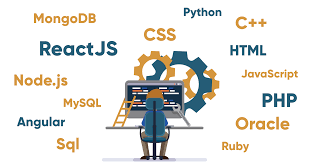

 Para un Desarrollador Back-End su principal preocupación es crear las aplicaciones que puedan encontrar y enviar datos al front-end. Muchos desarrolladores back-end usan bases de datos confiables a nivel empresarial como Oracle, Microsoft SQL Server, SAP Sybase, entro otros. Tabien se incluye el uso de otras bases de datos populares como MySQL, PostgreSQL y NoSQL. El back-end también llamado del “lado del servidor”, consiste de el servidor que provee los datos a petición, la aplicación que los canaliza y la base de datos que organiza la información.
Regresar